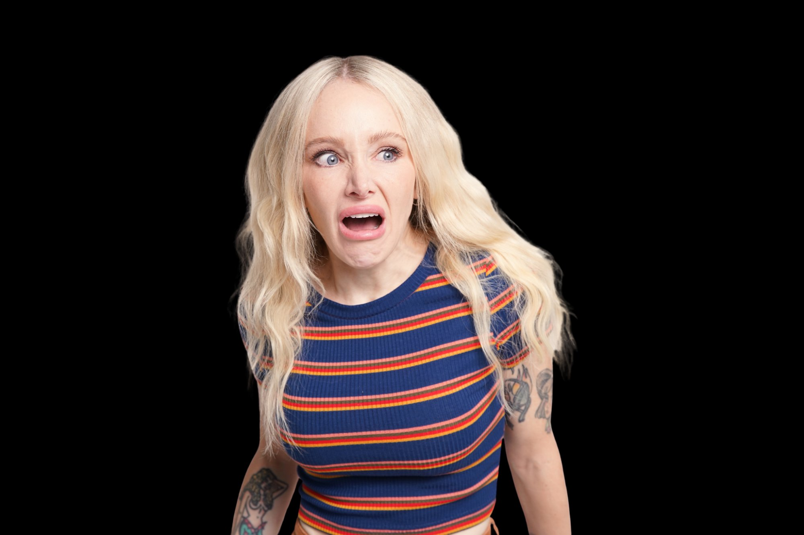
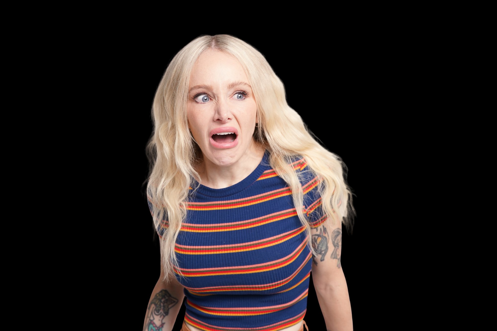

Meet Your Hosts
 

Sophie
Sophie started her production career on shows like Orange is the New Black and GLOW, but having always been a magnet for chaos she soon found her way onto the indie film scene going on to produce the SXSW award-winning pilot Halfrican American and the Oscar-shortlisted short film Bienvenidos A Los Angeles. She also managed video production for Barbie's YouTube channel at Mattel, winning multiple Telly Awards and a Shorty Award.
After a string of questionable life choices and a crash course in single motherhood, Sophie, determined to become a phoenix rising from the ashes, began an obsession with self-development, productivity hacks, and eventually, technology and AI.
Jessica
Jessica has over 12 years of experience as a producer in Los Angeles, working across television, film, animation, and tech. Growing up in a politically divided family, she witnessed firsthand how big tech controls and separates us from those we love instead of uniting us, sparking an enduring obsession with understanding how technology shapes who we are. This led her to create Artificial Insanity, a podcast and channel exploring AI and big tech's impact on culture and society.
Currently, Jessica is a consulting executive producer for clients including Mattel and several emerging AI startups. When she isn't reading and yapping about AI, she's vibe coding, watching movies, playing video games, and dabbling in electronics.